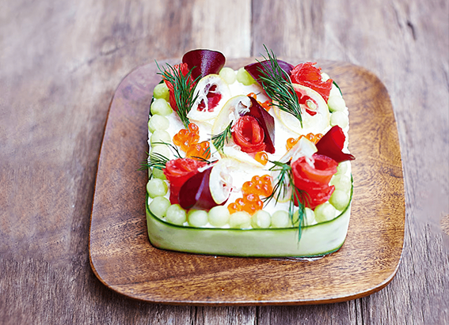
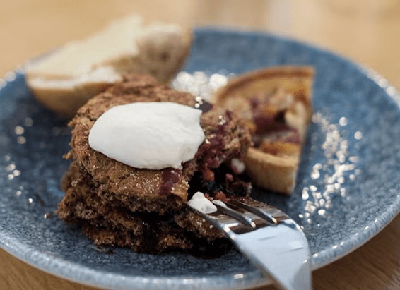

NATIONAL GEOGRAPHIC
Orange skies are the future. Prepare yourself.
ENVIRONMENT
As climate change drives an increase in wildfires, we’re seeing more smoke lofted into the upper atmosphere each fire season. Depending on wind and weather, this smoke can spread hundreds or thousands of miles from its source as we saw in early June on the U.S. East Coast.
And we’re likely to continue seeing it increase in severity, frequency, and longevity as the planet warms. As a photographer who has photographed over 125 wildfires in California over the last decade, I’ve gleaned some helpful tips and best practices for how to reduce exposure to harmful air once it reaches a town near you.
First, why is it getting worse?
In the U.S., the 10 worst wildfire seasons for acres burned have all occurred since 2004. Records are set and then re-broken each year in acreage, homes destroyed, or lives lost.
There is no winner in breaking records for these categories. The conditions for “ smoke events” impacting major population centers become more frequent and likely each year, as climate change drives conditions such as heat, drought, and the increasingly important vapor pressure deficit that promote large wildfire growth.
So what can you do?
An individual is powerless to change the weather or control where smoke goes, but there are things you can do to prepare and protect yourself from the worst of it.
The improvement in quality could also be related to advances in winemaking technology or changing critics’ preferences, the study authors noted.
As a general rule, an AQI of 100 starts to become hazardous, with larger tranches of people becoming affected as the AQI increases. On June 7, for example, New York City exceeded 400 AQI in some boroughs, meaning hazardous air for just about everyone outside. People who are asthmatic like me may feel affected by AQI above 75.
If you have the luxury of an indoor job or remote work, staying inside gives you better control over the air environment. Those working outside should limit their physical activity, and while guidelines are being developed for outdoor air quality, some states like Washington even require workers to be provided with masks on extremely poor air days.
Wear a NIOSH-approved N95 or better mask outdoors: The best mask should have two straps, one that goes above your ears, and the other below, for a better face seal to ensure you don’t suck in any smoke particles when you inhale. Popular for extended wear is the Envo mask series, which uses proprietary N95 replaceable filters, an adjustable elastic band, and gel for contact with the face.
You can get higher levels of protection from disposable P100 and reusable P100 half-face masks such as the Sundstrom SR-100 respirator series, which are sometimes used by wildland firefighters in more static environments. The higher protection masks cost more, are bulkier, and are less practical for casual use. For higher comfort, you can also get an N95 mask with an exhalation valve, which will reduce fogging and the buildup of moisture and heat from breathing out air.
Invest in a better air filter: If your home/office has central air, ensure your air filter is rated for 2.5 micron particles. This typically costs more than a basic dust filter, but is better at filtering out the smaller smoke particles suspended in the atmosphere. If your filter looks visibly dirty, replace it. Be sure to replace it every three months during fire season, and every six months under normal use.
Create your own air filtration system: Whether you have central air or a window AC, you can supplement your air purification with a Corsi-Rosenthal box—a DIY solution using four filters duct taped together with a fan on top, creating an ad-hoc room-to-room filtration solution. For $100 to $150, you can create a robust solution that will exchange air within about 500 square feet five times per hour.
Comments :
- john Very good
- john Very good
Leave a Reply
Your email address will not be published. Required fields are marked*
Related posts:
-
How to make smörgåstårta, the Swedish sandwich cake
Served at everything from weddings to funerals, and found in bakeries and supermarkets across Sweden, layered Smörgåstårta ‘cakes’ are a celebration of the savoury. They come in all shapes and sizes
View article -
The Great Danish Cake Off how a 21-cake buffet defines southern Jutland, Denmark
Crouched on a salt marsh, I knock back schnapps as the tide creeps towards me. My hand hovers over sea wormwood, a botanical I’m collecting on a tour of the coastline. Klaus and Jan, my guides, pull bottles of homemade
View article -
 5 flavours of Toulouse, from cassoulet to violets
5 flavours of Toulouse, from cassoulet to violetsThere’s a tangible romanticism about Toulouse. La Ville Rose (‘the pink city’), named in honour of its blush-hued buildings, is set around the Garonne river, a watery artery crisscrossed with medieval bridges
View article